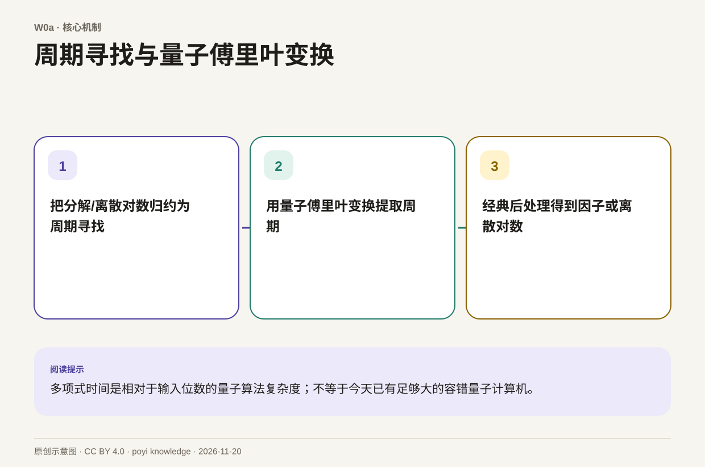
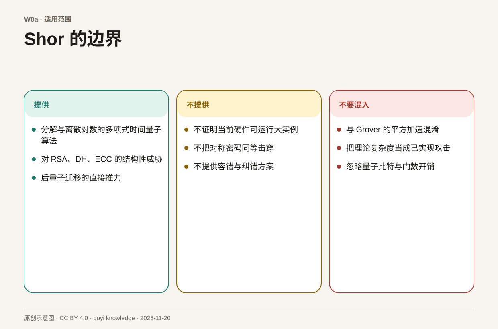

原理与机制
定理：肖尔算法（Shor's Algorithm）。定理（肖尔 1994）：整数分解和离散对数问题都可以在量子计算机上用多项式时间解决。
先把量词写清楚，因为这才是定理的骨架：
存在一个量子算法 A 和一个多项式 p，使得对任意合数 N（n = ⌈log₂N⌉ 位），A 在一台能执行任意幺正门、且能相干运行 O(p(n)) 步的量子计算机上，以 O(p(n)) 时间和 O(p(n)) 个量子比特输出 N 的素因子分解。对有限域和椭圆曲线群的离散对数问题同理。肖尔 1994 年的原始结果给出的复杂度是 O(n³) 时间、O(n) 空间，1997 年的正式版讲得更细。注意这条定理说的是"多项式时间"，不是"很快"。 n³ 在 n = 2048 时是 8.6×10⁹——单看这个数字不算离谱，但后面还要乘上纠错开销（见
broken）。归约：整件事被压成"找周期"这一个动作。 给定合数 N 和随机底数 a，考虑f(x) = aˣ mod N。它必然有周期 r（aʳ ≡ 1 mod N）。一旦拿到 r：若 r 是偶数且a^(r/2) ≠ -1 (mod N)，那么gcd(a^(r/2) - 1, N)与gcd(a^(r/2) + 1, N)里至少有一个是 N 的真因子。所以"分解大整数"被化归成了"量子周期查找"。
量子部分靠两件武器：叠加（一次模幂运算同时得到所有 f(x) 的值）和量子傅里叶变换（把周期 r 的结构显影到振幅上，连分数一展开，r 就浮出来）。Pedersen 与 Shor 1995 年的"半经典"版本把完整 QFT 换成相位估计，门数从 O(n²) 降到 O(n) 个受控旋转加 O(n log n) 个单比特门；Zalka 1998 年进一步证明整个 QFT 步骤只需要 O(log n) 个量子比特。离散对数用的是同一套机器：在群 G 里求 a 的阶 r，再解线性同余方程组。一个算法，两个死刑判决：RSA 和椭圆曲线一起完蛋。
用复杂度类的话说：整数分解与离散对数 ∈ BQP。顺带一提，Bernstein 与 Vazirani 1997 年证明 BQP ⊆ PSPACE，并且如果 P = BQP 那么 P = PSPACE——目前没有人相信后者。但肖尔定理根本不需要这个假设就已经足够致命：它把"分解整数很难"从信仰变成了"在量子计算机上不正确"。

为什么重要
因为它一次性废掉了整个公钥密码的地基，而这块地基下面压着地球上几乎所有的数字信任。
清单很长：RSA 加密、RSA 签名、Diffie–Hellman、ElGamal、DSA、ECDSA、ECDH、SSL/TLS 的密钥交换、PGP、SSH 主机密钥、比特币和以太坊的地址签名、代码签名证书的根密钥、HSM 里躺着几十年的根密钥、内核模块签名、固件更新签名。它们共享同一个数学假设——分解整数难、离散对数难——而这个假设在理论上已经不是假设了。
这件事的历史重量在于：1994 年，一篇论文，一个还不存在的机器，直接威胁了地球上所有的 HTTPS 连接、每一份代码签名、每一枚数字货币私钥——而当时世界上跑着的最好的量子机器能做的事，还不到 10 个逻辑比特。理论跑在硬件前面三十年，而且跑得很远。
1.后量子密码（PQC）这件事发生了。 NIST 在 2016 年发起征集，2024 年 8 月 13 日发布 FIPS 203（ML-KEM）、FIPS 204（ML-DSA）、FIPS 205（SLH-DSA）。整条后量子迁移路线的源头就是 1994 年这一篇论文。2."先收割、后解密"成了真实威胁。 今天抓走的密文可以存着，等机器造出来再解。保密期超过十年的数据，暴露面从"传输中"变成了"存储中"。这是唯一一条让"你不做迁移就等于已经泄露了"的威胁模型。 3.密码敏捷性成了硬需求。 既然要为一台还不存在的机器付代价，密码就必须能替换、能混搭、能灰度——混合 KEM、算法标识符、"crypto agility" 这些工程实践全部由此而来。边界必须说死：肖尔不动对称密码，不动哈希，不动一次性密码，不动 Kerckhoffs 原理。量子对密码学的威胁从来不是均匀的——公钥那边是断崖（塌方），对称那边只是台阶（减半，由格罗弗负责）。
应用与实例
今天没有人在生产环境里跑肖尔算法去破东西，因为没有机器跑得动它。它的现实用途是另外几件事：
- 它是所有后量子方案的标尺。 每个新算法都要回答同一个问题："在有肖尔算法的攻击者面前，我还有多少安全位数？" ML-KEM-768 的 192 位经典强度 / 约 128 位量子强度，这个 128 就是用肖尔算法定的锚。- 它是迁移时间表的依据。 NIST IR 8547（2024 年 11 月初稿）写得很直接：112 位强度的 RSA、DH、ECDSA、EdDSA 在 2030 年后弃用、2035 年后禁用；NSM-10 把 2035 年定为联邦系统完成迁移的目标年。这不是保守估计，是"等不起"的逻辑。
- 它在驱动一整套产业动作。 CISA 在 2026 年 1 月更新了"使用 PQC 标准的产品类别"清单，直接回应 2025 年 6 月 6 日的第 14306 号行政令；NIST 在 2025 年 9 月发布 SP 800-227《Recommendations for Key-Encapsulation Mechanisms》，2026 年 6 月更新密码敏捷性指南（CSWP 39）。"迁移"已经从研究议题变成采购条目。
- 它是教学与算法设计的母题。 相位估计、QFT、振幅估计这些今天量子算法的通用工具，都是从肖尔算法里长出来的。- 它给"长期保密"定了性。 十年、二十年后还要读不懂的数据，今天就该用后量子方案加密——这是"先收割、后解密"最直接的推论。
边界与攻击面
挡在定理和武器之间的是物理，不是数学。定理本身没被推翻，它被硬件卡住了三十年，今天依然卡着。
- "多项式时间"这个说法有多空。 电路级估算才是账单：Beauregard、Høyer 与 Mølmer 2011 年给出 0.3n³ 个 Toffoli 门、深度 O(n³)；Gidney 与 Ekerå 2021 年在抽象电路模型下给出 n 位 RSA 需要
3n + 0.002n·lg n个逻辑比特和 0.3n³ 个 Toffoli 门，256 位椭圆曲线离散对数约需 83 万物理比特、30 小时；Gidney 2025 年用近似剩余算术、轭式表面码和魔态培养，把 RSA-2048 压到不足一百万个含噪物理比特、耗时不到一周——同一篇论文也承认，在不改变物理假设的前提下他看不出再降一个数量级的办法。"多项式"这个标签，把三个数量级的差别藏了起来。 - 今天的机器差着好几个数量级。 IBM 的路线图写着：Nighthawk 是 120 比特方格阵、跑 5000–7500 个门；首台大规模容错机 Starling 在 2029 年，200 个逻辑比特、一亿个门；Blue Jay 在 2033 年之后，2000 个逻辑比特、十个亿个门。Google 的路线图第六阶段目标则是 2029 年前后约一百万个物理比特。对一下数字：Gidney 2025 的"一百万物理比特、不到一周"恰好压在 Google 2029 年的目标上；而 IBM 2029 年的 200 个逻辑比特，按那份估算连一次"试射"都不够（需要约 1600 个逻辑比特）。
- 纠错本身会吃掉一切。 逻辑比特要用距离 d 的表面码补丁实现，每个逻辑比特占
2(d+1)²个物理比特——开销几百倍到上千倍，而且要求物理门错误率稳定低于阈值。"一百万含噪比特"听着不多，前提是它们能纠错、能连轴转一周。 - 定理有前提。 模数必须是两个大素数之积：素数太接近、太小、或者是费马数那类形状，通用数域筛几秒就破，根本轮不到量子机。分解"困难的 N"和分解"随便一个 N"是两回事，定理针对的是前者。- 它不碰的东西一样没碰。 对称密码、哈希函数、一次性密码、量子密钥分发，都不受肖尔影响；格罗弗负责的那一半（2^n → 2^(n/2)）才是对称密码的量子威胁。而对称密码那半边要便宜得多——所以今天的优先级很清楚：先换公钥。
- 还有一层"时间不对称"。 前向保密（ECDHE）意味着过去的会话密钥早就死了，不会被未来的量子计算机翻出来。真正长期暴露的是长期签名密钥、归档的密文，以及需要三十年保密的数据。"何时该慌"取决于你的数据要藏多久，不取决于今天的机器有多强。
- 别把定理当预言。 定理说的是"如果有一台足够大的容错量子计算机"，不是"已经有了"。1994 年到今天，三十二年，密码学家手里握着一个已经证明会赢的算法，手里没有一台能跑的机器。迁移不是因为机器来了才做，是因为你知道它会来。

历史与背景
- 1994 年：肖尔在 FOCS 上发表《Algorithms for Quantum Computation: Discrete Logarithms and Factoring》，第一次给出多项式时间的分解与离散对数算法。"量子密码分析"这个说法就出自这篇论文的摘要。- 1995 年：Pedersen 与 Shor 提出高效（半经典）量子傅里叶变换，把 QFT 门数从 O(n²) 压到 O(n)；肖尔在《Physical Review A》给出通用量子计算所需门集的分析。- 1997 年：肖尔的正式版《Polynomial-Time Algorithms for Prime Factorization and Discrete Logarithms on a Quantum Computer》发表在《SIAM Journal on Computing》第 26 卷第 5 期，1484–1509 页；同期还有 Bernstein 与 Vazirani 的《Quantum Complexity Theory》。- 2011 年：Beauregard、Høyer 与 Mølmer 给出电路级估算——二十八亿个量子比特、八小时破 2048 位 RSA。这个数字在往后十四年里被反复压缩。- 2016 年：NIST 发起后量子密码标准化征集，公钥密码的"死期"第一次被写进正式文件。- 2021 年：Gidney 与 Ekerå 把估算压到二千万个含噪量子比特、八小时（Quantum 5, 433）。- 2024 年 8 月 13 日：NIST 发布 FIPS 203/204/205，后量子标准正式生效。同年 11 月：NIST IR 8547 初稿给出迁移时间表（2030 年弃用、2035 年禁用）。- 2025 年：Gidney 把 RSA-2048 的成本压到不足一百万个含噪量子比特、不到一周；IBM 与 Google 各自公布面向 2029 年的容错路线图；SP 800-227 发布。- 到今天为止：仍然没有密码学相关的量子计算机。一次 2048 位 RSA 分解所需的算力，在 2026 年依然是天方夜谭。
逐步示例与核验
形式模型与复算步骤
[\Pr[\mathrm{Bad}_A(\lambda)]\le \varepsilon(\lambda)]
肖尔算法的公开参数、密钥/随机数与消息；变量说明：Bad 为归约中定义的失败事件，ε 为可忽略函数。1.定义失败事件。2.构造归约把攻击者转成困难问题求解器。3.证明失败概率上界。边界：公式只覆盖已登记的参数与假设；参数取值、标准版本和实现细节仍以来源为准。
参考出处
- Wikipedia search entry for 肖尔算法. https://zh.wikipedia.org/w/index.php?search=%E8%82%96%E5%B0%94%E7%AE%97%E6%B3%95
- Handbook of Applied Cryptography (Menezes, van Oorschot, Vanstone). https://www.cacr.math.uwaterloo.ca/hac/